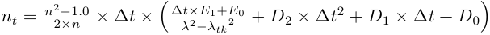
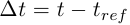

Material::Dielectric class reference
[Core module]
Declaration
#include <Goptical/Material/Dielectric>
namespace Goptical {
namespace Material {
class Dielectric;
};
};
This class is a member of the Material namespace.
This abstract class contains pure virtuals.
Inheritance
Description
This class models optical properties of dielectric materials. Transmittance values are stored in an Data::Set object with Data::Cubic interpolation enabled.
Child class has to implement the get_measurement_index function which must return relative refractive index as measured in medium material set by set_measurement_medium function. Default measurement medium is std_air.
The relative refractive index together with the absolute refractive index of measurement medium are used to compute absolute refractive index of dielectric material at reference temperature. This is the value returned by the get_refractive_index function when no temperature model is in use.
Temperature coeffiecients can be defined to take current material temperature into account when computing absolute refractive index:
The set_temperature_dndt function enables use of refractive index temperature deviation factor.
The set_temperature_schott function enables Schott temperature model as described in Schott "TIE-19: Temperature Coefficient of the Refractive Index" technical information document. It uses the following formula:
 \times \left( \frac{\Delta t\times E_1+E_0}{{\lambda}^{2}-{\lambda_{tk}}^{2}} +
D_2\times {\Delta t}^{2}+D_1\times \Delta t+D_0 \right)" />with  and
 the micrometer wavelength.
the micrometer wavelength.
Members
See also the full member list section for this class.
Inherited members
- 23 members inherited from Solid
Functions
- Dielectric()
- void clear_internal_transmittance()
- void disable_temperature_coeff()
- double get_abbe_vd() const
- double get_abbe_ve() const
- virtual double get_internal_transmittance(double wavelen, double thickness) const
- double get_internal_transmittance(double wavelen) const
- virtual double get_measurement_index(double wavelen) const = 0;
- double get_partial_dispersion(double wavelen1, double wavelen2) const
- double get_principal_dispersion() const
- virtual double get_refractive_index(double wavelen) const
- Data::DiscreteSet & get_transmittance_dataset()
- virtual bool is_opaque() const
- virtual bool is_reflecting() const
- void set_internal_transmittance(double wavelen, double thickness, double transmittance)
- void set_measurement_medium(const const_ref<Material> &medium)
- void set_temperature_dndt(double dndt)
- void set_temperature_schott(double d0, double d1, double d2, double e0, double e1, double wl_tk)
- void set_wavelen_range(double low, double high)
Members detail
No documentation available
Clear all transmittance data. Returned transmittance value is always 1.0 when the data set is empty.
See also get_transmittance_dataset function.
Disable use of temperature coefficients
Compute glass Abbe number from refractive index model. Use d spectral line. Wavelen is in nm
Compute glass Abbe number from refractive index model. Use d spectral line. Wavelen is in nm
This virtual function overrides the get_internal_transmittance virtual function defined in the Material base abstract class.
Documentation inherited from base class:
Get material internal transmittance for thickness in mm. Subclasses _must_ provide this function or the get_extinction_coef() function.
This function shadows the get_internal_transmittance function defined in the Material base abstract class.
Documentation inherited from base class:
Get material internal transmittance for 1mm thickness.
Get material relative refractive index in measurment medium at specified wavelen in nm.
Compute glass partial dispersion between two wavelen in nm
Compute glass principal dispersion.
This virtual function implements the get_refractive_index pure function declared in the Material base abstract class.
Documentation inherited from base class:
Get material absolute refractive index at specified wavelen in nm.
Data::DiscreteSet & get_transmittance_dataset()
Get internal tranmittance dataset object.
See also clear_internal_transmittance function.
This virtual function implements the is_opaque pure function declared in the Material base abstract class.
Documentation inherited from base class:
Return true if material must be considered opaque for ray tracing
This virtual function implements the is_reflecting pure function declared in the Material base abstract class.
Documentation inherited from base class:
Return true if material may reflect most of the light and must be considered as a mirror when ignoring ray intensity computation during ray tracing.
Add transmittance data, wavelen in nm
Set glass measurement medium material.
Set and enable dn/dt thermal coefficient.
Set and enable Schott thermal coefficients. wl_tk in um.
Set wavelen validity range in nm